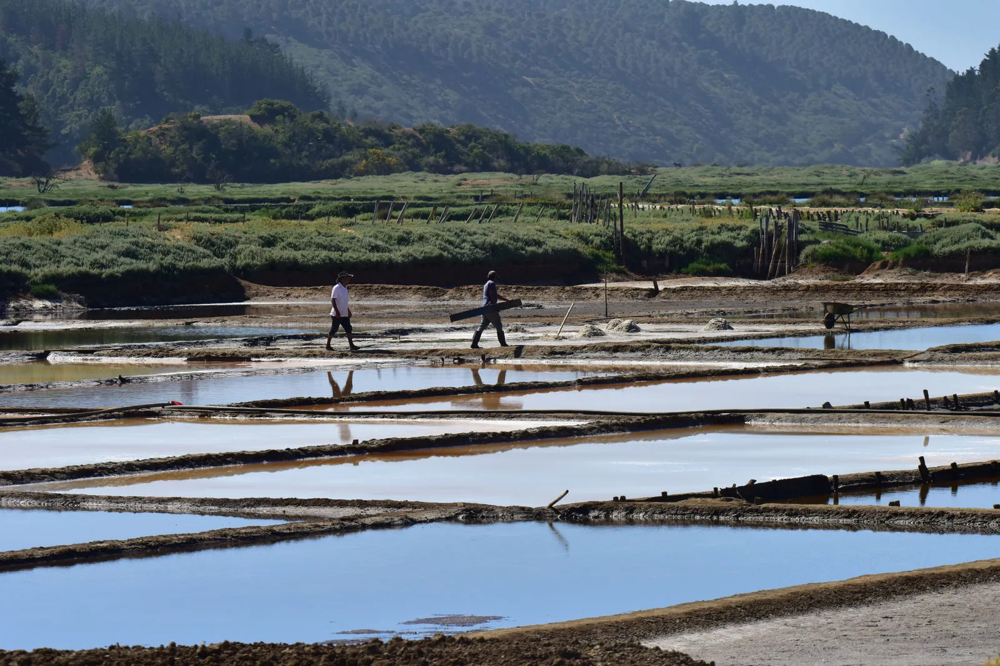

Expediciones · Cultura
Rutas etnoculturales
Conoce los oficios de las comunidades locales y habitantes del territorio.
Elige cómo vivir tu aventura: en grupo o 100% privada, con toda la atención solo para ti. La opción privada incluye un suplemento del 20%.